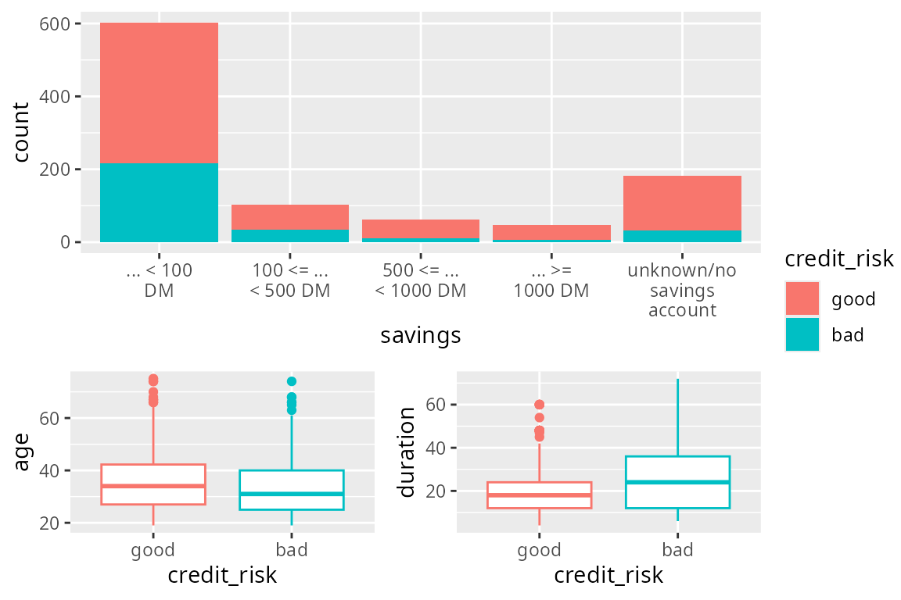
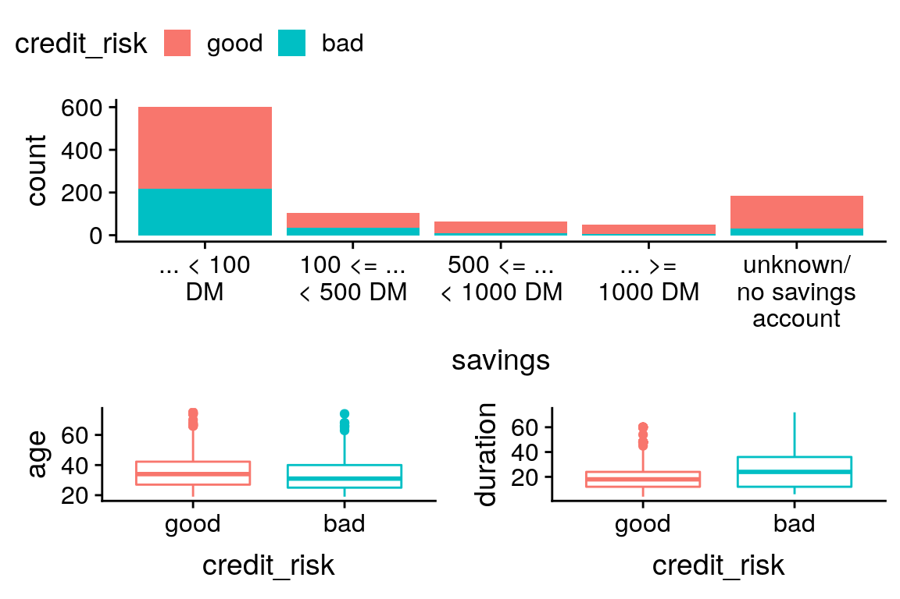

customLayout - cookbook
Zygmunt Zawadzki
2018-10-30
Source:vignettes/customlayout-cookbook.Rmd
customlayout-cookbook.RmdBasics
Show only one legend for multiple ggplot2 charts.
Solution
library(customLayout)
library(ggplot2)
library(klaR) # for GermanCredit dataset
library(stringr) # for str_wrap
library(cowplot) # for get_legend
data("GermanCredit")
p <- ggplot(GermanCredit)
# create first plot
# stringr::str_wrap used to wrap long label
# https://stackoverflow.com/a/21894897/10441348
p1 <- p + geom_bar(aes(savings, fill = credit_risk))
p1 <- p1 + scale_x_discrete(
labels = function(x) stringr::str_wrap(x, width = 10))
# add two more plots
p2 <- p + geom_boxplot(aes(credit_risk, age, color = credit_risk))
p3 <- p + geom_boxplot(aes(credit_risk, duration, color = credit_risk))
# Create basic layout
lay <- lay_bind_row(
lay_new(1),
lay_new(cbind(1,2)),
heights = c(3, 2)
)
plList <- list(p1,p2,p3)
# lay_grid(plList, lay) # <- every plot has its own legend
# extract legend from one of the plots
# in this case the first one
# the cowplot library is required
legend <- cowplot::get_legend(p1)
# remove legends from all plots
# https://stackoverflow.com/a/35622358/10441348
plList <- lapply(plList, function(p) p + theme(legend.position="none"))
#### Legend on the right side ####
# add a placeholder for the legend
legendPlaceholder <- lay_new(1)
layWithLegend <- lay_bind_col(lay, legendPlaceholder, widths = c(6,1))
# add the legend to the list of the plots
lay_grid(c(plList, list(legend)), layWithLegend)
#### Legend on the top ####
legendTop <- cowplot::get_legend(p1 + theme(legend.position="top"))
#### Legend on the top ####
layWithLegendTop <- lay_bind_row(
legendPlaceholder, lay, heights = c(1, 6))
lay_grid(c(list(legendTop), plList), layWithLegendTop)
PowerPoint
Create editable chart in PowerPoint.
Problem
I want to be able to edit a plot inside PowerPoint (eg. change the font sizes in axes, remove elements, and so on).
Solution
To export editable plot use the phl_with_vg function. It uses the rvg package to make your plot editable. It supports both base graphics and ggplot2 plots.
library(officer)
library(customLayout)
library(ggplot2)
library(rvg)
# Create basic layout
lay <- lay_bind_row(
lay_new(1),
lay_new(cbind(1,2)),
heights = c(3, 2)
)
olay <- phl_layout(lay)
set.seed(123)
pptx <- read_pptx()
pptx <- add_slide(pptx, layout = "Two Content", master = "Office Theme")
phl_with_vg(pptx, olay, 1, code = {
plot(rnorm(10), rnorm(10))
title("Title")
})
data("diamonds")
diamonds2 <- diamonds[sample.int(nrow(diamonds), 100), ]
gg1 <- ggplot(diamonds2) + geom_point(aes(carat, price))
gg2 <- ggplot(diamonds2) + geom_point(aes(depth, price))
phl_with_vg(pptx, olay, 2, ggobj = gg1)
phl_with_vg(pptx, olay, 3, ggobj = gg2)
print(pptx, target = tempfile(fileext = ".pptx"))